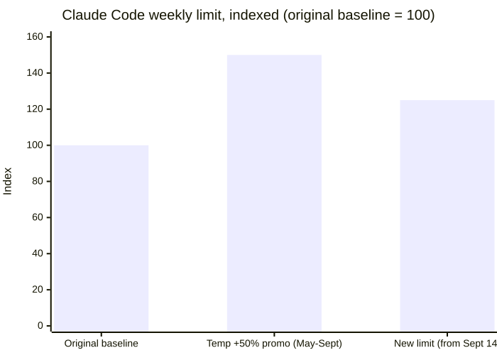

5 — Never let one vendor set your ceiling
I'm on Claude Max 20x — $200 a month. Some days I burn the weekly cap in about thirty minutes. I moved my daily driver over to ChatGPT Plus and haven't hit a wall yet. This isn't an "OpenAI wins" story. It's a "never let one vendor set your ceiling" story, and the difference matters, because the honest version of this story is messier than the clean one.
Here's the real, dated part. On August 29, 2026, Anthropic announced what they called a "25% increase" to Claude Code's weekly limits, effective September 14. What that announcement doesn't lead with: it's replacing a temporary +50% promotional bump that had been running since May. Net effect, in Anthropic's own numbers: subscribers are getting roughly 17% less weekly capacity from mid-September than they'd had all summer. Both framings are technically true at the same time — "up 25% from baseline" and "down 17% from what you got used to" — and at least five outlets independently corroborated the underlying change, which is the part that isn't in dispute.

Both numbers in the announcement are correct. They're just measured from two different starting lines.
Now the correction to my own framing, because it matters if you're going to draw a conclusion from this: Max 20x, at $200 a month, actually price-matches ChatGPT Pro, not the $20 Plus tier I moved to. Pro keeps its own five-hour usage cap off entirely at that price point. So this isn't a clean apples-to-apples "which $200 plan is better" comparison — I'm paying ten times more for Claude than for ChatGPT and still hitting a wall faster on the expensive one. And to be fair to Anthropic specifically: Plus users hit walls too. A GitHub issue on OpenAI's own Codex repo documents GPT-5.6-Sol at High reasoning effort burning through 60% of a Plus quota in six minutes. This is shared compute strain across the industry, not one vendor being uniquely stingy. Every lab is rationing a resource that's more expensive to provide than any of the subscription prices really reflect.
Which is exactly why the lesson isn't "switch to OpenAI." It's don't let any single vendor's rate-limit policy define your actual capacity. There's already a Show HN tool for this, called Hydra, that does automatic failover between Claude Code, OpenCode, Codex, and Pi the moment one of them hits a limit — the workload keeps moving, it just stops caring which provider is doing the work at any given moment.

The workload doesn't know or care which provider ran it. That's the whole point.
This kind of portability is more possible today than it was a year
ago, and not by accident. Anthropic donated the Model Context Protocol
to the Linux Foundation and helped stand up Agent Skills as an open
standard in December 2025 — the same SKILL.md
format now runs, unmodified, in Codex, Cursor, Gemini CLI, GitHub
Copilot, and more than 35 other tools. That's a genuinely generous
move for a company that could have kept its own format proprietary
and used it as another form of lock-in. It's also exactly the
infrastructure that makes "just point your skills and agents at
whichever provider has headroom this week" a realistic strategy
instead of a fantasy. I'm planning to open-source a small kit built
on top of these standards, aimed at exactly that — portability
as a default, not an emergency measure you improvise the day you hit
a wall.
None of this replaces just using tokens well in the first place, which
is the boring lever that works regardless of which vendor you're on
this week. Prompt caching cuts repeated-context cost by up to 90% on
both Anthropic's and OpenAI's pricing. Claude Code's own
/compact command trims context before it becomes a
problem instead of after. And model routing — sending easy
requests to a cheap model and only escalating the hard ones — is
a documented, not theoretical, saving: LMSYS's RouteLLM cut cost by
more than 85% on MT-Bench-style evaluation while holding quality
steady, and Stanford's Minions project reported a 5.7x cost reduction
while keeping 98% of output quality intact, by having a small local
model handle what it can and escalate only what it can't.
In practice, what actually changed for me wasn't a dramatic migration — it was giving up the idea that one provider should be my whole workflow. The background agents that run on a schedule and don't need a human in the loop — sweeping GitHub issues and PRs, light monitoring, opportunity search — sit on whichever provider has headroom that week, because nobody's watching them run in real time anyway, so provider-hopping costs nothing in experience. The work that actually needs my judgment in the loop stays wherever I currently trust it most for that specific kind of task. That split is the whole strategy: cheap, unattended, high-volume work is where vendor flexibility is free money; judgment-heavy work is where you keep paying for whichever model has earned your trust on that job, exactly like the capability-versus-judgment gap from the first post in this series.
Be skeptical of anyone selling you "multi-provider" as a product — most of what's written about it online is vendor marketing for whichever router they're selling. But the underlying instinct is sound, and it's the one I'd want any engineer reading this series to leave with: use tokens like they're a real budget line, because they are, and don't build your workflow so tightly around one vendor's current mood on rate limits that a policy email from them becomes your outage.